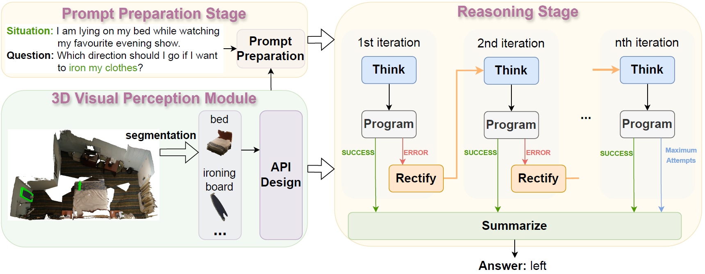

Overall Framework

Overall Framework of LLM-TPC. LLM-TPC comprises three key components: the 3D Visual Perception Module equips the LLM with 3D context perception abilities, the Prompt Preparation Stage prepares prompts for reasoning, and the Reasoning Stage involves iterative Think-Program-reCtify loops.
LLM-TPC contains a Think-Program-reCtify loop to iteratively enhance the question answering performance.
In the Think phase, an LLM is prompted to decompose the question into a series of steps in natural language, taking advantage of LLM's world knowledge.
It then generates an executable Python program in the following Program phase guided by the steps in the Think phase. The program calls a set of 3D visual perception modules to query necessary information needed to solve the target question.
Next, in the Rectify phase, the program is executed and corrected if it fails or reaches a maximum number of iterations.
Finally, the final answer is formalized through summarizing the execution results.
Demo


Click the image to select a scene for result visualization and drag to move your view around.
BibTeX
@article{qingrong2024llm-tpc,
title={Think-Program-reCtify: 3D Situated Reasoning with Large Language Models},
author={Qingrong He and Kejun Lin and Shizhe Chen and Anwen Hu and Qin Jin},
journal={arXiv preprint arXiv:2404.14705},
year={2024}
}